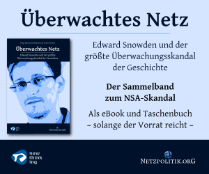

Überwachtes Netz - Gratis Ebook von Netzpolitik
Martin, 06.06.2014
Vorgestern hat Netpolitik.org das Buch "Überwachtes Netz" zum gratis download angeboten.
Dementsprechend meine Empfehlung: Holt es euch! Es ist eine Essay-Sammlung von verschiedenen Artikeln die nicht nur die Bedeutung des Skandals aus der Sicht von ganzen Zivilgesellschaften und staatlichen Beziehungen beleuchten, sondern auch aus der Sicht des einzelnen Bürgers. Die Bedeutung dieses Skandals kann gar nicht überschätzt werden, da plötzlich aus einer Verschwörungstheorie Gewissheit wurde.
iPrivate bringen es auf den Punkt. Die Überwachung ist Gewissheit und keine Verschwörungstheorie mehr - und das dank der Hilfe der heutigen Internetriesen.
Die Erklärungen von so manchem Schlaumeier in Foren, dass dies doch keine Überraschung sei und man dies von Geheimdiensten erwarten müsse, ist nun die letzte Verteidigungslinie der Ignoraten, die nicht begreifen wollen was diese Maßnahmen für die Zivilgesellschaft bedeuten und bereit sind diesen Eingriff zu dulden solange es nur in anderen Ländern schlimmer zu geht. (Die sollen sich trauen das einmal in Russland, China, etc. auszusprechen).
Das Buch hält einige Pfeile bereit um seinen Argumenteköcher aufzumagazinieren.